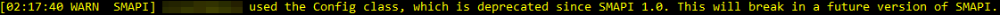

Modding:Migrate to SMAPI 2.0
This page is for mod authors. Players: see Modding:Mod compatibility instead.
This page explains how to update your SMAPI mod code for compatibility with SMAPI 1.9 (released alongside Stardew Valley 1.2 in April 2017) and 2.0 (released in October 2017).
Overview
What's changing and how much does it impact mods?

The last major breaking change was in SMAPI 0.40 (April 2016). Since then 23 SMAPI releases were published with almost full backwards compatibility. SMAPI has matured significantly since version 0.40, and its APIs have converged towards better consistency. Older APIs have been deprecated with full support, but this introduces significant maintenance overhead. A few rarely-used APIs were dropped in SMAPI 1.9 (when Stardew Valley 1.2 broke many mods), and SMAPI 2.0 is the release which finally drops support for these old APIs.
Although this is a major change, significant effort was undertaken to minimise the impact on mods: (a) the APIs were supported for a long time with increasingly prominent warnings in the SMAPI console about their deprecation and removal; (b) dozens of pull requests were submitted to update affected mods; (c) unofficial updates were created for mods which haven't updated officially yet; and (d) the changes were actively communicated and documented to modders. This means that SMAPI 2.0 has a minimal impact on mod compatibility (see chart on the right).
How to update your mod
You don't need to comb through your code manually. SMAPI can tell you if you're using a deprecated interface:
- Use the latest SMAPI for developers download. This will show deprecation messages in the console:
 - When you look at the code, you'll see a deprecation warning with a hint of how to fix it:

- Optionally, you can refer to the following sections on how to replace specific interfaces.
Major changes
Removed APIs
The following APIs were removed in SMAPI 1.9 and 2.0.
| deprecated | removed | old APIs | replacement |
|---|---|---|---|
| 0.39.3 | 1.9¹ | SObject class | reimplement if needed. |
| 0.39.3 | 1.9¹ | Extensions.ToSingular(…) | use string.Join. |
| 1.0 | 1.9¹ | Authour in manifest.json | use Author. |
| 1.0 | 1.9¹ | Extensions class | reimplement if needed, or use an extensions library. |
| 1.0 | 1.9¹ | LogWriter class | use this.Monitor.Log. |
| 1.0 | 1.9¹ | SPlayer class | use Game1.player. |
| 1.0 experimental API |
1.9¹ | IConfigFile and ConfigFile | reimplement if needed. |
| 1.1 | 1.9¹ | Command.CallCommand(string) | use this.Helper.ConsoleCommands. |
| 1.1 | 1.9¹ | Mod.Entry(ModHelper) | change ModHelper to IModHelper. |
| 1.5 | 1.9¹ | Version class | use SemanticVersion. |
| 1.5 | 1.9¹ | Mod.Manifest | use Mod.ModManifest (changes type from Manifest to IManifest). |
| 1.5 | 1.9¹ | Constants.Version | use Constants.ApiVersion (changes type from Version to ISemanticVersion). |
| 1.0 | 2.0 | Config class | see mod configuration. |
| 1.0 | 2.0 | Mod.BaseConfigPath | see mod configuration. |
| 1.0 | 2.0 | Mod.PathOnDisk | see mod configuration or use this.Helper.DirectoryPath. |
| 1.0 | 2.0 | Mod.PerSaveConfigFolder | use per-save JSON files instead. |
| 1.0 | 2.0 | Mod.PerSaveConfigPath | use per-save JSON files instead. |
| 1.0 | 2.0 | Mod.Entry(object[]) | see mod entry method. |
| 1.1 | 2.0 | Log class | use the this.Monitor.Log mod method. |
| 1.6 | 2.0 | PlayerEvents.FarmerChanged | serves no purpose. |
| 1.6 | 2.0 | PlayerEvents.LoadedGame | use SaveEvents.AfterLoad. |
| 1.6 | 2.0 | TimeEvents.OnNewDay | unreliable and don't do what you think; use TimeEvents.AfterDayChanged or SaveEvents.BeforeSave instead. |
| 1.9 | 2.0 | Command class | use this.Helper.ConsoleCommands. |
| 1.10 | 2.0 | GameEvents.Initialize GameEvents.LoadContent |
move any code into your Entry method. |
| 1.13 | 2.0 | GameEvents.GameLoaded | move any code into your Entry method. |
| 1.14 | 2.0 | TimeEvents.DayOfMonthChanged TimeEvents.SeasonOfYearChanged TimeEvents.YearOfGameChanged |
unreliable and don't do what you think; use TimeEvents.AfterDayChanged or SaveEvents.BeforeSave instead. |
¹ Stardew Valley 1.2 broke many existing mods, so SMAPI 1.9 used the opportunity to remove the most rarely-used deprecated APIs.
Mod entry method
For the latest documentation, see Modding:Modder Guide/Get Started.
Change your mod's entry class from this:
/// <summary>Initialise the mod.</summary>
public override void Entry(params object[] objects)
{
// your code
}
to this:
/// <summary>The mod entry point, called after the mod is first loaded.</summary>
/// <param name="helper">Provides simplified APIs for writing mods.</param>
public override void Entry(IModHelper helper)
{
// your code
}
Mod configuration
For the latest documentation, see Modding:Modder Guide/APIs/Config.
If you use config.json, it's much easier in 1.0.
- Find your subclass of StardewModdingAPI.Config, which probably looks something like this:
class SampleConfig : StardewModdingAPI.Config { public bool ExampleBoolean { get; set; } public float ExampleFloat { get; set; } public override T GenerateDefaultConfig<T>() { this.ExampleBoolean = true; this.ExampleFloat = 0.5; return this as T; } }
- Edit this class as follows:
- Move default values into the constructor or property setters.
- Remove StardewModdingAPI.Config.
- Remove all override methods.
- Your class should now look something like this:
class SampleConfig { public bool ExampleBoolean { get; set; } = true; public float ExampleFloat { get; set; } = 0.5; }
or like this if you used a constructor:
class SampleConfig { public bool ExampleBoolean { get; set; } public float ExampleFloat { get; set; } public SampleConfig() { this.ExampleBoolean = true; this.ExampleFloat = 0.5; } }
- In your Mod class, change anything that looks like this:
var config = new SampleConfig().InitializeConfig(this.BaseConfigPath);
to this:
var config = helper.ReadConfig<SampleConfig>();
- If you use other methods, here's how to migrate them:
before 1.0 after 1.0 new SampleConfig().GenerateDefaultConfig()
new SampleConfig().Instance()new SampleConfig() new SampleConfig().InitializeConfig(this.BaseConfigPath)
config.UpdateConfig()
config.LoadConfig(this.BaseConfigPath)
config.ReloadConfig()helper.ReadConfig<SampleConfig>() config.WriteConfig() helper.WriteConfig(config)
For more information, see Modding:Modder Guide/APIs/Config.